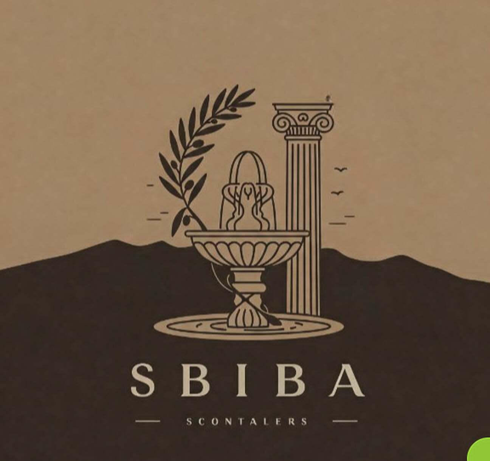

SUF'ESS: Hackathon in 24h — What We Built and What I’d Do Again
SUF’ESS was built during a 24-hour hackathon. The goal was to ship a credible MVP under extreme time pressure:
a cultural exploration experience that feels modern, guided, and interactive — not just a static list of places.

1) The Problem We Chose
In many cities, cultural discovery is either overwhelming (too much info) or boring (no narrative).
We wanted a user to open the app and immediately get a guided experience: where to go, what to see, and why it matters.
2) Scope Control (The Real Hackathon Skill)
- One core user journey: open → pick a theme → get a guided route → consume story cards.
- One strong demo: show a complete experience end-to-end, even if the dataset is small.
- Defer “nice-to-haves”: login, complex profiles, large content library.
3) MVP Architecture
We kept it simple and demo-friendly: a mobile-first experience with a lightweight backend.
The system was designed to be extensible: locations + story cards + optional AI-driven guidance.
- Mobile UI built quickly with FlutterFlow to speed up iteration.
- Backend endpoints to serve points of interest, routes, and narrative content.
- Prototype “AI guidance” concept (RAG-ready): structured content that can later power a guided assistant.
4) Demo Strategy (Why People Believe It’s Real)
- Start with a story: what the user wants in 10 seconds.
- Show the full loop: selection → route → narrative → next step.
- Make it visual: clean screens, consistent design, minimal text overload.
5) What I’d Do Again
- Design the MVP around a single “wow” moment.
- Keep the system modular so improvements are easy after the hackathon.
- Prioritize a demo that runs smoothly over adding extra features.
Tech Stack
FlutterFlow • Backend API • Geo concepts • Narrative content • RAG-ready structure • Git